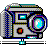
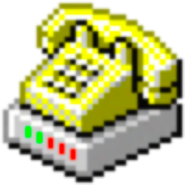
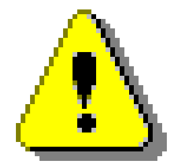
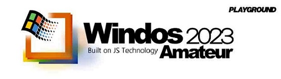
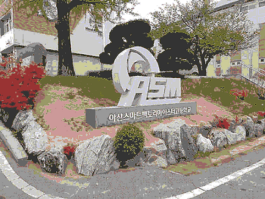
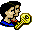

시작
내 WINDOS 정보

사진 뷰어 : ASMImage.png
Minecraft

하이텔 - 통신 서버
소리바다 - 파도
하이텔 -
통신 서버
소리바다 -
파도
Minecraft Classic
수직 비율 상자 제거
Χ

다음 작업을 진행하면 다시는 되돌릴 수 없습니다. 정말로 진행하시겠습니까?
유지합니다.
제거합니다.
내 WINDOS 정보
Χ

Windos 2023 Amateur Editon
(Built on JS Technology)
그시그감 프로젝트
(그 시절 그 감성)
[ 제작자 정보 ]
아산스마트팩토리마이스터고 2학년
강찬영 (BackGwa)
- 풀스택 개발자
[ 도움을 주신 분 ]
백석대학교 컴퓨터공학부
이승화 교수님
[ 그래픽 리소스 ]
Windos 관련 리소스 : 강찬영 (BackGwa)
아이콘 원본 리소스 : Windows98 icons
[ 사운드 리소스 ]
Windows 2000 Booting Sound
Windows XP Sound Effect
[ 게임 리소스 ]
원본 리소스 :
https://classic.minecraft.net/
원본 레포지토리 :
Offroaders123/Minefork
포크 레포지토리 :
BackGwa/Minefork
[ 참고 리소스 ]
Windows 2000 Startup Screen - (이미지)
PC 통신 - (영상)
하이텔 화면 - (이미지)
Windows 2000 Start Menu - (이미지)
Windows 2000 - (영상)
소리바다 파도 - (이미지)
사진 뷰어 : ASMImage.png
Χ

가시(버즈).mp3
[mp3]-[32K]-[Mono]-[03:44]
뒤로
재생 / 일시정지
앞으로
프로그램 종료
Minecraft
Χ
하이텔 - 통신 서버
메뉴
연결
연결 종료

통신 종료
시스템 재시동
WINDOS 정보
꽉 찬 화면
수직 비율 상자 제거